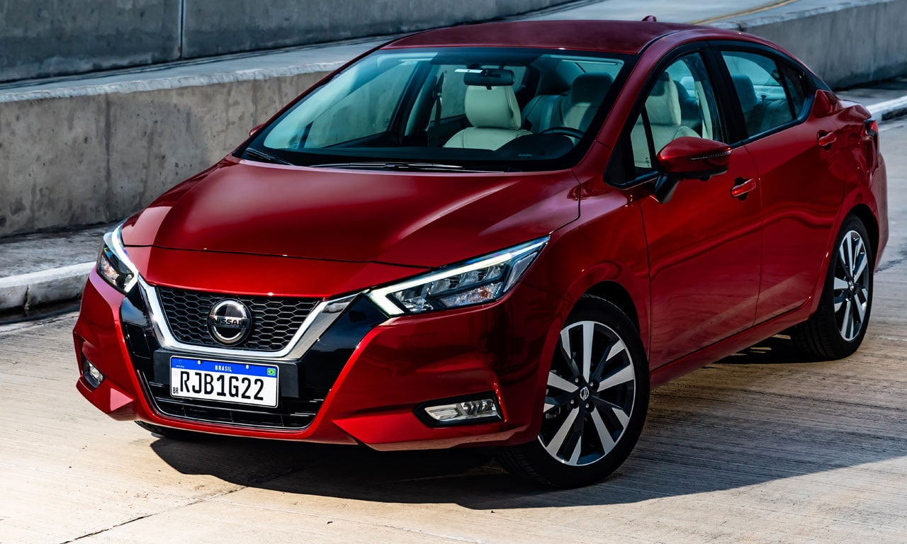

Serviços Nissan
Serviços Nissan

Nissan Express Service (Serviços Rápidos)
- Serviços de manutenção de rotina realizados de forma ágil e eficiente, como troca de óleo e filtros, inspeção de fluidos e pneus, com prazos de entrega mais curtos.
- Ideal para quem busca conveniência e rapidez na manutenção básica do Nissan, sem a necessidade de agendamento prévio em alguns casos.
Alinhamento 3D com Tecnologia Nissan
- Utilização de equipamentos de alinhamento computadorizados com tecnologia tridimensional para garantir a precisão do ajuste da direção do seu Nissan.
- Proporciona melhor dirigibilidade, segurança, economia de pneus e combustível, seguindo os padrões de fábrica da Nissan.
Cristalização de Vidros Nissan
- Aplicação de uma resina protetora nos vidros do seu Nissan, aumentando a visibilidade em dias de chuva, facilitando a limpeza e oferecendo maior segurança em caso de quebra.
- Serviço que contribui para o conforto e a segurança ao dirigir, especialmente em condições climáticas adversas comuns em Vitória.
Higienização Interna com Ozônio Nissan Pure Drive
- Serviço de higienização do interior do veículo que utiliza ozônio para eliminar bactérias, vírus, fungos e odores, promovendo um ambiente mais saudável e livre de alérgenos.
- Especialmente recomendado para quem se preocupa com a qualidade do ar dentro do carro e para famílias com crianças ou pessoas com sensibilidade respiratória.
Instalação de Acessórios de Segurança e Conforto NissanConnect
- Instalação e configuração de acessórios originais NissanConnect, como alarmes com controle remoto, sensores de estacionamento integrados ao sistema multimídia e outros dispositivos de segurança e conveniência.
- Mantém a originalidade e a garantia do veículo, com a instalação realizada por técnicos treinados pela Nissan.
Reparo de Para-brisas (Trincas e Rachaduras)
- Serviço especializado no reparo de pequenas trincas e rachaduras no para-brisas do seu Nissan, evitando a necessidade de substituição completa do vidro.
- Solução mais econômica e rápida para manter a segurança e a visibilidade, além de evitar que a trinca se espalhe.
Serviço de Câmbio CVT Nissan (Manutenção e Calibração)
- Manutenção específica para a transmissão continuamente variável (CVT) dos veículos Nissan, incluindo a troca do fluido CVT original e a calibração do sistema.
- Garante o bom funcionamento, a durabilidade e a eficiência da transmissão CVT, que é uma característica importante de muitos modelos Nissan.
Diagnóstico de Bateria com Teste de Carga Inteligente Nissan
- Avaliação da condição da bateria do seu Nissan utilizando equipamentos de teste de carga inteligente, que fornecem um diagnóstico preciso sobre a vida útil e a capacidade da bateria.
- Ajuda a prevenir problemas de partida e garante que a bateria esteja funcionando de forma confiável.